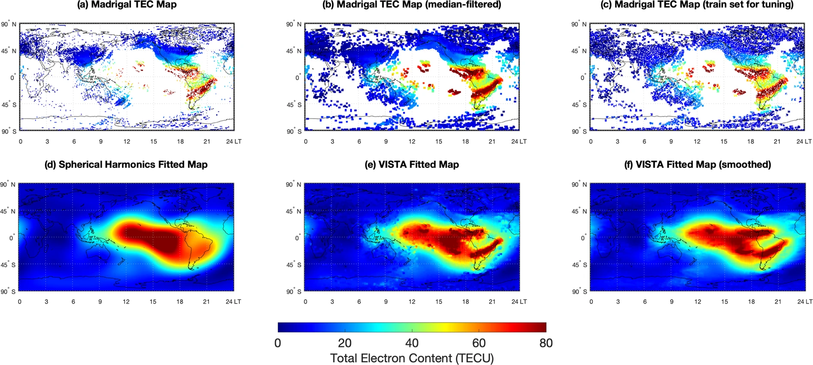
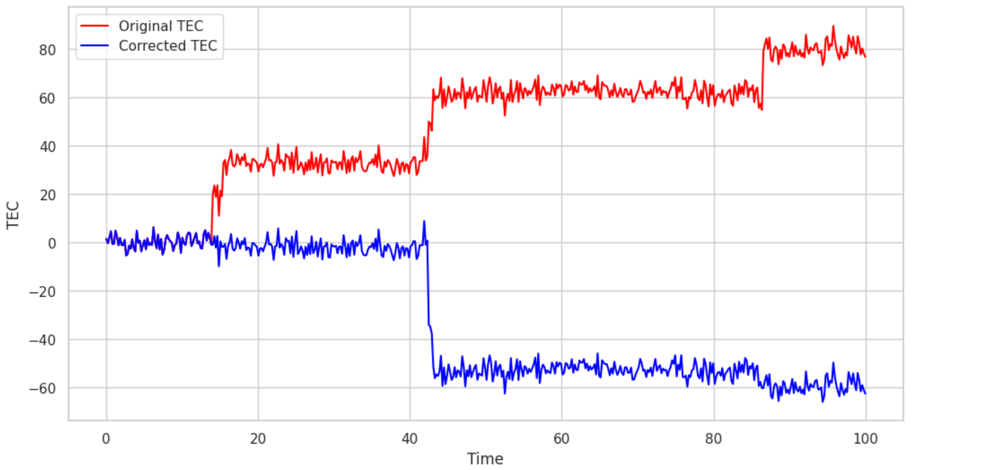
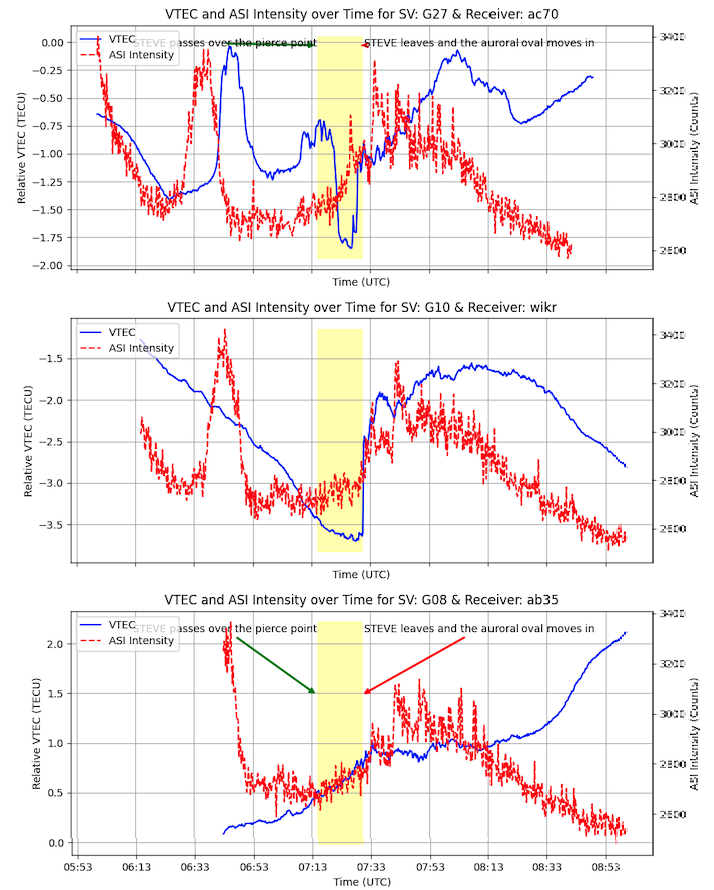
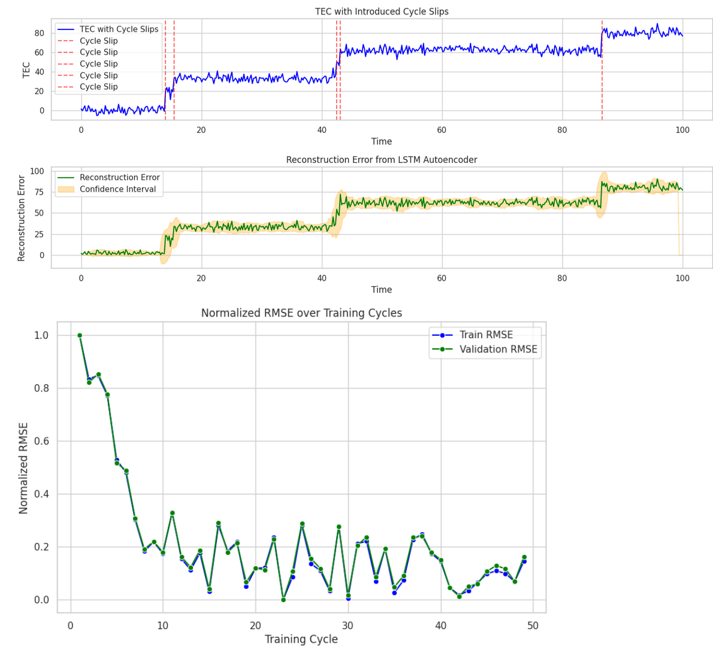
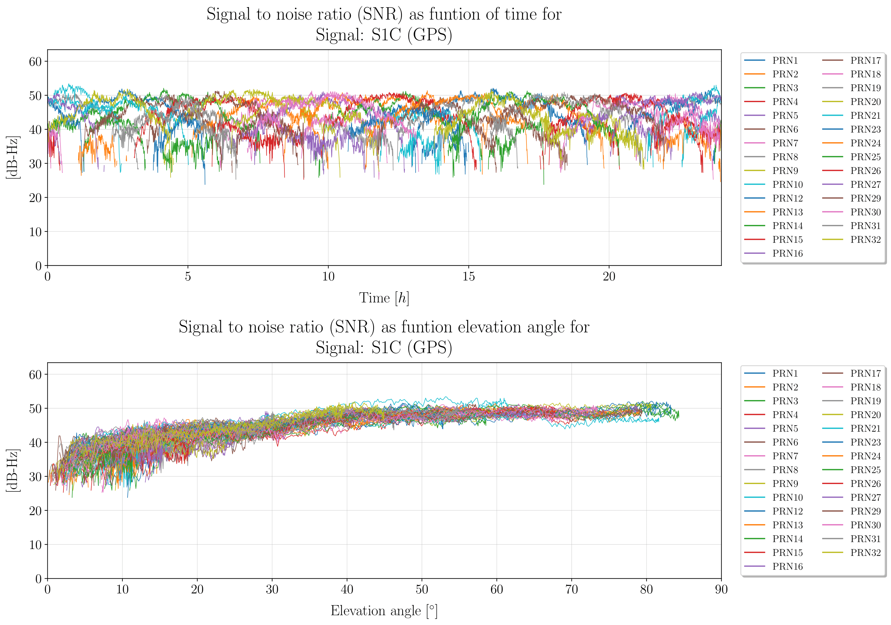
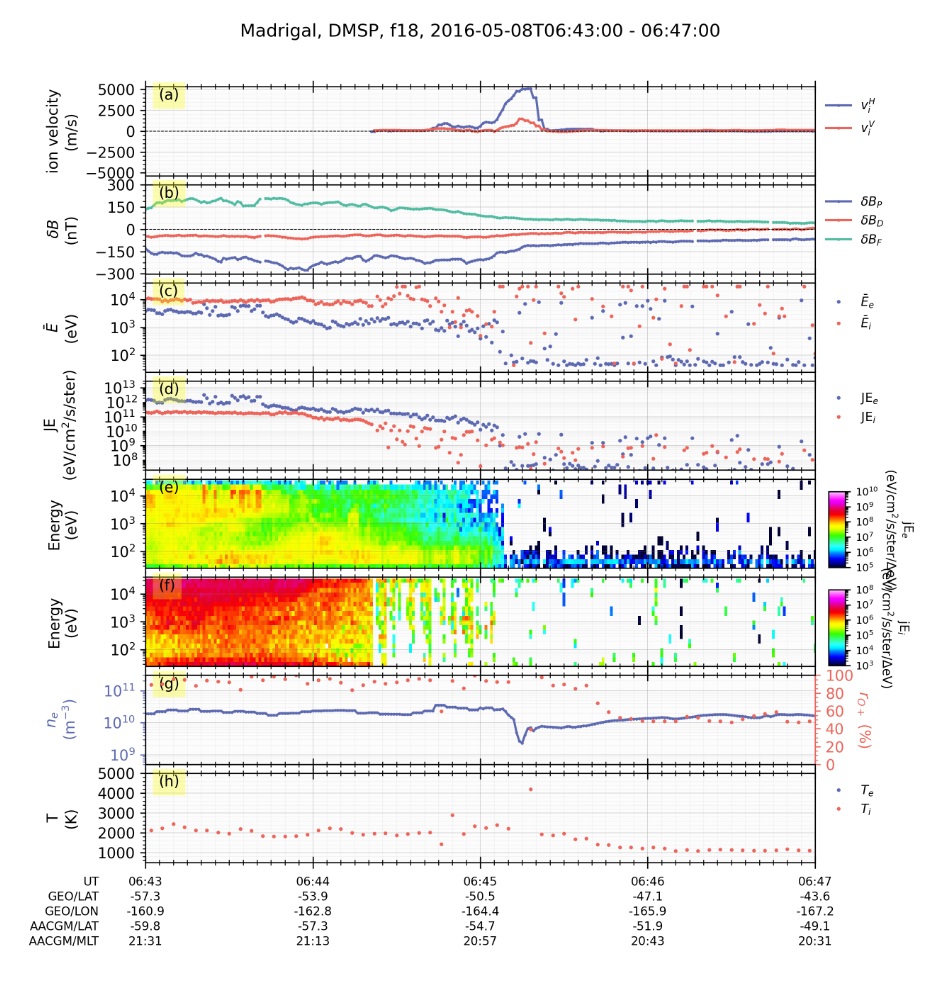

Overview
Algorithms
Data Processing
1. Ionospheric Assumption Validation
For speed of computation, we use fast 2d and 3d natural neighbors interpolation (thick large-scale structures) and VISTA (thick medium-scale structures) (Video Imputation with SoftImpute, Temporal smoothing and Auxiliary data) to validate the ionospheric assumption. The VISTA algorithm is shown below

The assumption is (somewhat) invalid during solar storms, geophysical storms, magnetic reconnection with solar winds, coronal mass ejections, and so on.
2. RINEX conversion
Developed an internal Python package named rinexpy - looking to merge with georinex:
rinexpy Operations
-
Merging and Editing RINEX Files:
rinexpyprovides the ability to merge multiple RINEX files into a single output. It also allows for editing of the file contents, such as adjusting header information, modifying observation types, and managing data intervals to ensure consistency across different GNSS data sources.
-
Clock Jump Correction:
rinexpyautomatically detects and corrects clock jumps in GNSS observation data. This feature ensures time continuity and improves the accuracy of the GNSS data by addressing disruptions caused by clock shifts.
-
Ionospheric Correction:
rinexpyapplies higher-order ionospheric corrections to the GNSS data, mitigating the impact of ionospheric disturbances on the accuracy of satellite positioning information.
-
File Format Conversion:
rinexpysupports converting BINEX and RTCM files into the RINEX format. This conversion simplifies working with GNSS data by providing a standardized format that is widely used and recognized across various platforms.
-
Interactive RINEX File Viewer:
rinexpyincludes an interactive, web-based viewer for RINEX files. This feature allows users to visualize and analyze GNSS data efficiently, making it easier to interpret and manage the information contained in RINEX files.
Examples:
- Merging files
from rinexpy import merge_files
# Merge multiple RINEX files into a single output
merged_file = merge_files(['file1.rnx', 'file2.rnx'], output='merged_output.rnx')
# Edit RINEX file: Change data interval and include only specific satellites
edited_file = merge_files(
['file1.rnx'],
output='edited_output.rnx',
interval=30, # Change data interval to 30 seconds
include_sats=['G01', 'G02'] # Include only satellites G01 and G02
)
- Correcting clock jumps
from rinexpy import correct_clock_jumps
# Automatically detect and correct clock jumps in a RINEX file
corrected_file = correct_clock_jumps('input_file.rnx', output='corrected_output.rnx')
- Ionospheric correction
from rinexpy import ionospheric_correction
# Apply higher-order ionospheric corrections to a RINEX file
corrected_file = ionospheric_correction('input_file.rnx', output='corrected_output.rnx')
- File Format Conversion - BINEX, RTCM, etc
from rinexpy import convert_to_rinex
# Convert a BINEX file to RINEX format
rinex_file = convert_to_rinex('input_file.binex', output='output_file.rnx')
# Convert an RTCM file to RINEX format
rinex_file = convert_to_rinex('input_file.rtcm', output='output_file.rnx')
- RINEX viewer (Georinex call)
from rinexpy import view_rinex # Soft Georinex call, output as interactive Matplotlib figure
# Launch an interactive viewer for a RINEX file
view_rinex('input_file.rnx')
4. Analysis
1. Cycle slip correction
We design machine learning models for cycle slip correction. These are better than the heuristic 'stiching' process that may remove important TEC jumps that could identify an ionospheric phenomenon.


The technique used is LSTM-based autoencoders, for several reasons.
- The Poker Flat setups are the same receiver in roughly the same area, so we are justified in using LSTM-based autoencoders for this.
- Under the assumptions that the internals of Pixel phones suffer roughly the same wear-and-tear, autoencoders are straightforward to deploy on Sagemaker and call for inference. We are looking into making cycle slip correction on-device using heuristic algorithms, but for large data, minimal scalloping and autoencoders are used. Caveat: we are still in the modeling stage because of the temperature dependence of recorded pseudorange on GNSS noise.

We also account for multipath noise, temperature noise (Rideout and Coster), propagation errors, ionospheric delays, and utilize precise point positioning to estimate slant TEC as accurately as possible.

- Time-series classification: How does TEC change during an auroral event?
Given a dataset of time-series TEC curves at some frequencies, we want to classify them to make an early-warning system for auroral events (so citizen scientists can go out and take photographs!)
You can probe ionospheric conditions (such as from DMSP) and get extra time series, as shown.

a. To classify phenomena, we use two separate models. First, the method for auroral phenomenon identification.
Method:
- Use 1D CNN to classify raw TEC changes as STEVE, SAPS, SAID, Discrete Aurora, Continuous Aurora, etc.
- Analyze satellite flyby data in order to see what ionospheric, magnetospheric, and thermospheric parameters change in that time period, and if the event is classified into two classes by two different models, then this is a warning event.
Miscellaneous
Computer Vision algorithms used:
We use Max-Tree for faint phenomenon identification, active learning, monocular depth estimation (Depth Prediction Transformers), and Open Set recognition to identify STEVE in citizen science images.
The clustering model developed was to classify all-sky images of aurora - using ResNet-18 to extract features, used PCA to reduce dimensionality, and K-Means++ to cluster. Achieved silhouette score of 0.7, Davies-Bouldin index of 0.9, Calinski-Harabase index of 256 indicating high-quality cluster separation, and better separation between clusters.
Life on Mars
Generated TEC maps from MARSIS data by modeling with two-layer Chapman functions for Martian ionosphere. Used VISTA to reconstruct (in 3D), 3d volumes of maps. Auxiliary guess was made using natural pixel decomposition, where the 3d structure estimated with tomography. Specifically, it is modeled as a Fredkin integral of the first kind and pLogMART is used as the matrix inversion algorithm. Simulated GPS propagation through it